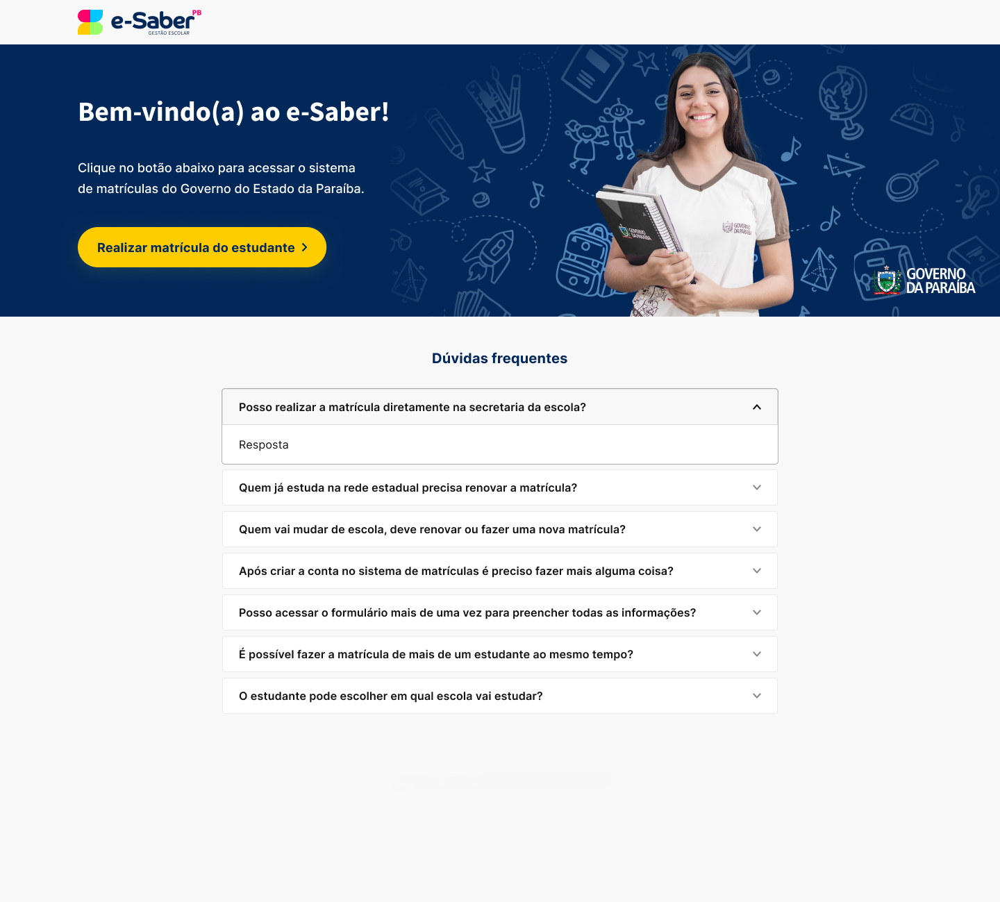
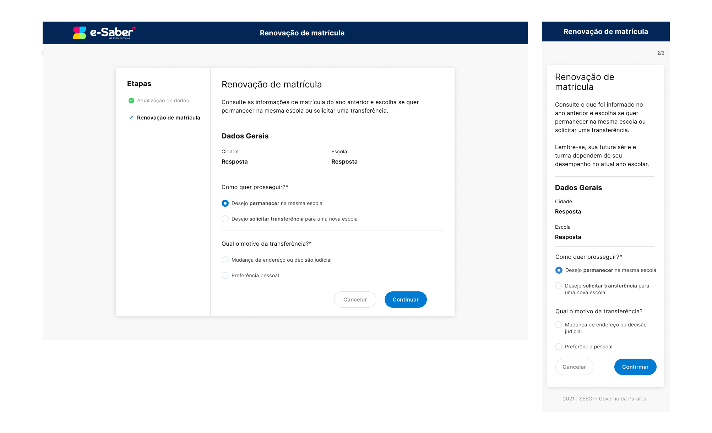
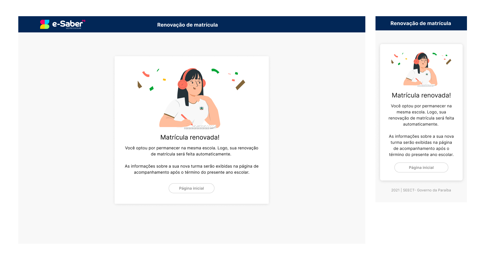
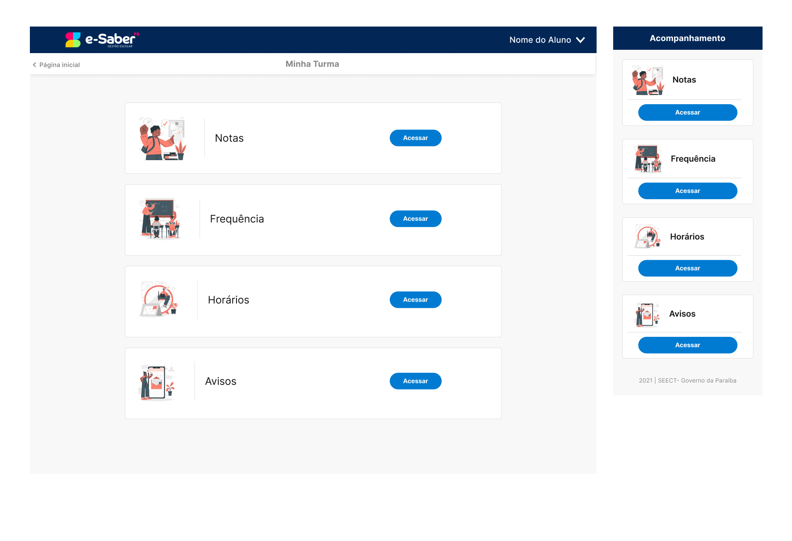
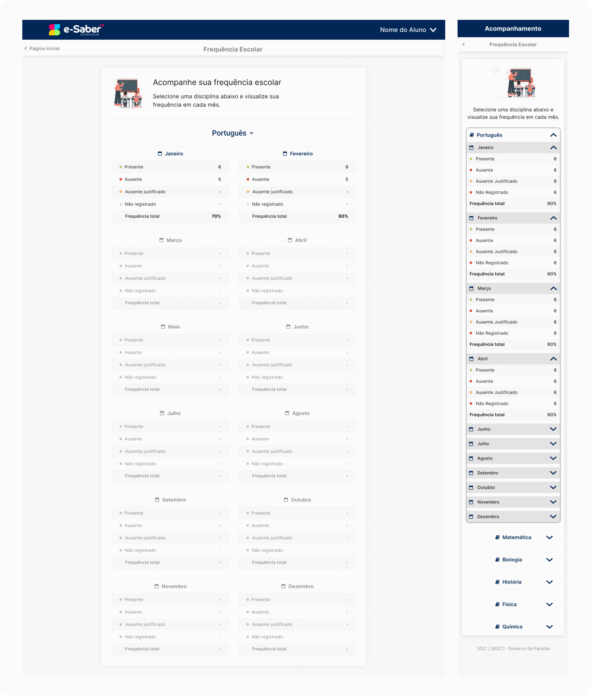
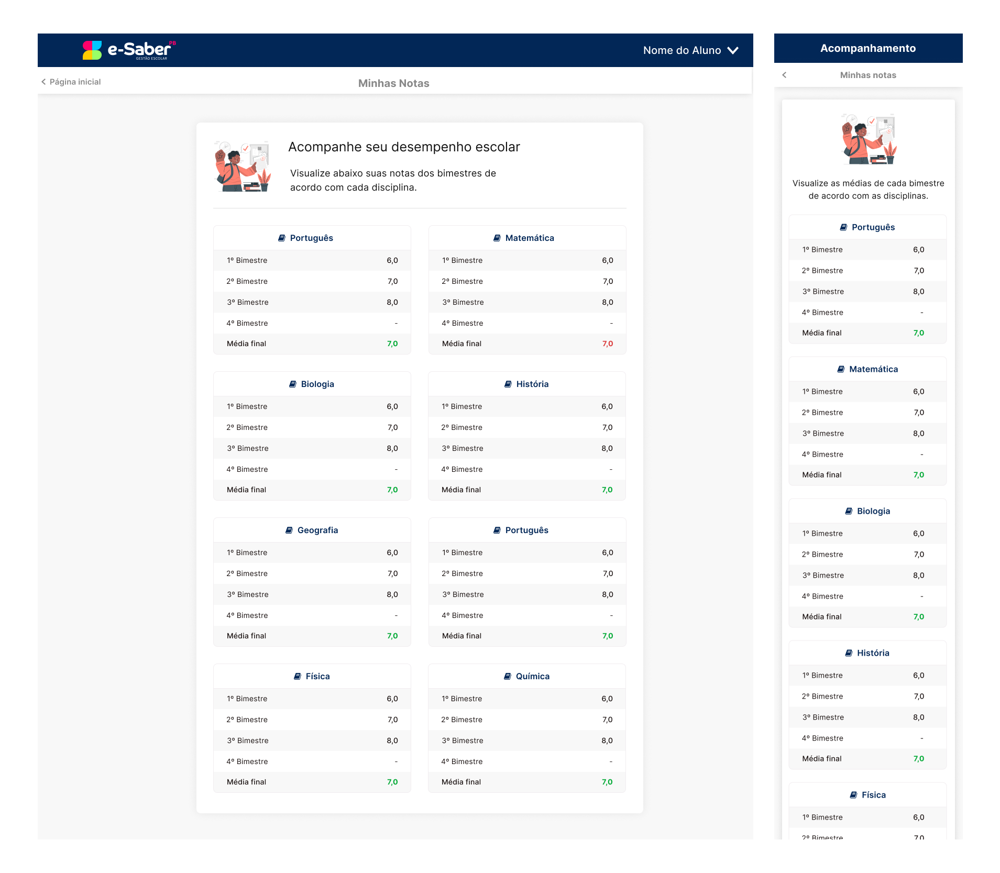
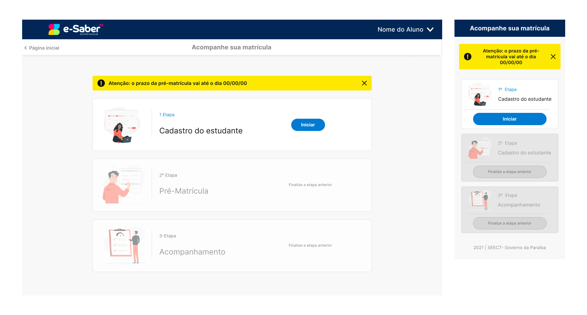

Um ecossistema com públicos muito diferentes
Estudantes, famílias, professores e equipes administrativas acessam o sistema com objetivos, frequência de uso e níveis de familiaridade digital distintos, em meio a pandemia do COVID-19.
UX/UI · Web Design · Design System · Responsive Design
Uma experiência digital para jornadas acadêmicas e administrativas da rede estadual de ensino da Paraíba.
Meu trabalho foi organizar fluxos, estados e componentes para tornar diferentes jornadas do ecossistema mais claras, consistentes e adaptáveis entre desktop e mobile.
Produto
Plataforma educacional para o estado da Paraíba
Usuários
Estudantes, Famílias, Professores, Gestão
Contexto
Pandemia COVID-19. Alunos e responsáveis em isolamento

Experiência multicanal
Fluxos pensados para diferentes perfis e contextos de uso.
O SIAGE reúne processos acadêmicos e administrativos como matrícula, acompanhamento escolar, registros docentes e operações de gestão. Além da complexidade funcional, o projeto precisava considerar um público muito diverso em familiaridade com tecnologia — um contexto que investiguei diretamente em conversas com alunos e responsáveis.
Estudantes, famílias, professores e equipes administrativas acessam o sistema com objetivos, frequência de uso e níveis de familiaridade digital distintos, em meio a pandemia do COVID-19.
A experiência precisava manter padrões visuais e de interação, mas respeitar jornadas que variam de uma matrícula pontual a rotinas administrativas recorrentes.
Atuei desde a compreensão do público até a construção e refinamento das interfaces, conectando pesquisa qualitativa, arquitetura de informação, UX e UI.
Conversas com alunos e responsáveis para entender dificuldades, expectativas e barreiras de uso no cotidiano.
Análise de um público com níveis muito diferentes de letramento digital e familiaridade com serviços on-line.
Organização das jornadas para estudantes, famílias, professores e administração.
Etapas, estados, mensagens e comportamentos necessários para fluxos críticos.
Interfaces de alta fidelidade com hierarquia e legibilidade consistentes.
Componentes para formulários, feedbacks, tabelas e cartões de informação.
Adaptação das telas-chave entre desktop e dispositivos móveis.
Organização de componentes e protótipos para implementação.
A experiência precisava acomodar desde uma ação esporádica de matrícula até o acompanhamento frequente de informações escolares e rotinas de gestão.
Jornadas diretas para matrícula, confirmação e acompanhamento de informações escolares.
Rotinas recorrentes relacionadas a cadastro, lotação, aulas, frequência e avaliação.
Maior volume de informações, cadastros, calendários, painéis e processos administrativos.
Antes de definir parte das jornadas, conversei com alunos e responsáveis para compreender como lidavam com processos escolares no dia a dia e como um sistema digital poderia ser recebido por públicos com níveis muito diferentes de familiaridade com tecnologia.
O público não podia ser tratado como homogêneo. Algumas pessoas já possuíam familiaridade com o on-line, enquanto outras não
Ações como matrícula ou renovação não acontecem todos os dias, reduzindo a possibilidade de aprender o sistema apenas pela repetição.
Em jornadas críticas, etapas, estados e próximos passos precisavam ficar explícitos, mesmo quando isso significava mostrar mais orientação na tela.
Os aprendizados das conversas com alunos e responsáveis ajudaram a transformar necessidades de uso em princípios concretos de experiência.
Rótulos em linguagem cidadã, ilustrações, instruções e etapas explícitas para apoiar diferentes níveis de letramento digital.
Processos pouco frequentes precisam indicar o que está acontecendo e qual é o próximo passo, sem depender da memória do usuário.
Confirmações, pendências e estados claramente identificados para reduzir dúvidas sobre o andamento de cada processo.
Fluxos adaptados para desktop e mobile, preservando hierarquia, leitura e ação principal em telas menores.
Em vez de apresentar telas isoladas, o case conecta os principais momentos da experiência de matrícula e acompanhamento.
01 · Orientação
A entrada do fluxo apresenta o serviço e concentra dúvidas frequentes antes de levar o usuário para a ação principal.

02 · Decisão
A renovação organiza informações e escolhas em uma sequência previsível, reduzindo o volume de decisões simultâneas.

03 · Confirmação
Após a ação principal, a interface confirma o resultado e orienta o próximo passo, evitando que o usuário precise inferir se a operação foi concluída.

04 · Continuidade
Depois da etapa transacional, o sistema passa a concentrar informações como notas, frequência, horários e avisos.

Mais do que desenhar páginas, a experiência precisava comunicar claramente o status de cada etapa e o que o usuário poderia fazer a seguir.
A experiência final foi construída em torno de um princípio:
Ação principal liberada e pronta para uso.
Etapa futura ou ação temporariamente bloqueada.

Prazo, pendência ou informação que exige leitura imediata.
Confirmação explícita de uma ação finalizada.
Orientação para situações que impedem continuidade.
As interfaces finais consolidam arquitetura, estados e padrões visuais em áreas centrais da experiência escolar.

Status e etapas apresentados em uma sequência temporal compreensível.

Status e etapas apresentados em uma sequência temporal compreensível.

Status e etapas apresentados em uma sequência temporal compreensível.